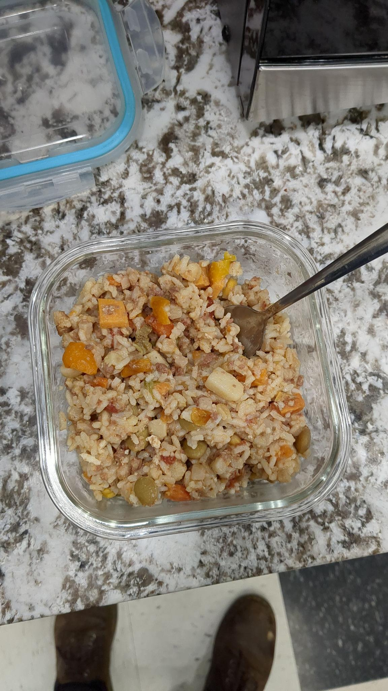

Home
Hot & Spicy Spam Stir-Fry

Hot and Spicy Spam stir-fry, quick and easy.
An easy, budget-friendly recipe for hot and spicy Spam (the best one) stir-fry. Can be made with fresh rice or, better yet, day or two old rice.
Ingredients
- 1 can of Hot and Spicy Spam
- 2 cans of mixed vegetables (or fresh veggies of your choice)
- 1/4 stick of butter
- 1 cup of white rice
- 2 cups of water
Steps
- Place one cup of white rice in a colander or some other vessel and wash thoroughly. At least 3 times.
- Fill a pot with 2 cups of water and bring to a boil.
- Add rice and stir, then cover and reduce heat to a simmer. Don't touch!
- Open the cans and slice the Spam. Do this however you'd like; thin slices or diced or what have you.
- Put some butter in a pan and sauté the vegetables. Season if you wish.
- Add in the sliced Spam until vegetables are cooked and the Spam is crispy.
- Serve rice with vegetables and Spam! Top with you favorite sauce!
Additional Steps (for using old rice)
- Mix in rice with vegetables while sautéing if using day old rice, be liberal with the butter to prevent sticking!
- Serve!